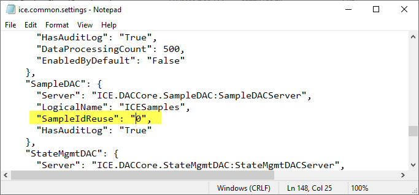

Enabling the Reuse of Sample IDs
This topic includes information about how to enable the reuse of sample IDs after a set amount of days have passed.
- Be sure the system is not currently processing samples, and close the Console App and Machine Control App.
- Go to C:\Program Files (x86)\DxI 9000\Settings and use Notepad to open the ice.common.settings file.
- Locate the line that reads:
"SampleIdReuse": "0",

- Change the
"0" (or whatever the current value may be) to any number from 0-90 where:
- -1 = Sample ID can be reused without any delay
- 0 = Sample ID reuse is disabled (cannot reuse sample ID)
- 1 to 90 = Sample ID can be reused after the given number of days has passed (example: a value of 1 will allow users to re-use sample IDs 1 day after initially used).
- Save and close the file in Notepad.
- Restart the PC.
- After the system initializes to a
GREEN (Ready) status, the changes will be implemented.
Note: Verify expected behavior by loading duplicate Sample IDs after the designated number of days and by confirming they begin processing.